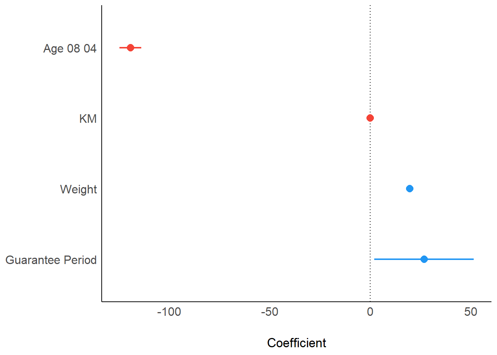

Code
pacman::p_load(ggstatsplot, tidyverse)With the assistance of ChatGPT
In this hands-on exercise, we will be exploring:
ggstatsplotggstatsplot extends ggplot2, integrating statistical test results directly into visualizations.
We will be using ggstatsplot and tidyverse packags.
pacman::p_load(ggstatsplot, tidyverse)In this exercise, Exam_data.csv will be used. The `read_csv() function from the readr package is used to import the dataset into R and store it as a tibble data frame.
exam <- read_csv("data/Exam_data.csv", show_col_types = FALSE)stat(exam)# A tibble: 322 × 7
ID CLASS GENDER RACE ENGLISH MATHS SCIENCE
<chr> <chr> <chr> <chr> <dbl> <dbl> <dbl>
1 Student321 3I Male Malay 21 9 15
2 Student305 3I Female Malay 24 22 16
3 Student289 3H Male Chinese 26 16 16
4 Student227 3F Male Chinese 27 77 31
5 Student318 3I Male Malay 27 11 25
6 Student306 3I Female Malay 31 16 16
7 Student313 3I Male Chinese 31 21 25
8 Student316 3I Male Malay 31 18 27
9 Student312 3I Male Malay 33 19 15
10 Student297 3H Male Indian 34 49 37
# ℹ 312 more rowsgghistostats() will be used to build a visual of one-sample test on English scores.
set.seed(1234)
gghistostats(
data = exam,
x = ENGLISH,
type = "bayes",
test.value = 60,
xlab = "English scores"
)
Default information: - statistical details - Bayes Factor - sample sizes - distribution summary
The Bayes Factor quantifies the strength of evidence in favor of one hypothesis over another, comparing the alternative hypothesis (H₁) to the null hypothesis (H₀).
It helps evaluate data in support of the null hypothesis while incorporating external information.
A common method for approximating the Bayes Factor is the Schwarz criterion.
The Bayes Factor (BF) is a positive number used to assess the strength of evidence for one hypothesis over another.
Refer here for one of the most common interpretations of Bayes Factor, first proposed by Harold Jeffereys (1961) and slightly modified by Lee and Wagenmakers in 2013.

ggbetweenstats()The code below, ggbetweenstats() is used to build a visual for two-sample mean test of Maths scores by gender.
ggbetweenstats(
data = exam,
x = GENDER,
y = MATHS,
type = "np",
messages = FALSE
)
Default information: - statistical details - Bayes Factor - sample sizes - distribution summary
ggbetweenstats()The code below used ggbetweenstats() to build a visual for One-way ANOVA test on English score by race.
ggbetweenstats(
data = exam,
x = RACE,
y = ENGLISH,
type = "p",
mean.ci = TRUE,
pairwise.comparisons = TRUE,
pairwise.display = "s",
p.adjust.method = "fdr",
messages = FALSE
)
Meaning of the symbol function of ggbetweenstats():
| Symbol | Meaning |
|---|---|
| ns | pairwise.display - only non-significant |
| s | pairwise.display- only significant |
| all | pairwise.display - everything |
| p | type - Parametric tests (default) |
| np | type - Non-parametric tests (e.g., Kruskal-Wallis, Wilcoxon) |
| r | type - Robust statistical tests (e.g., trimmed means ANOVA) |
| bayes | type - Bayesian analysis for comparisons |
ggscatterstats()The code below, ggscatterstats() is used to build a visual for significant test of correlation between MATHS and ENGLISH scores
ggscatterstats(
data = exam,
x = MATHS,
y = ENGLISH,
marginal = FALSE,
)
ggbarstats()The Maths scores is binned into 4-class variables using cut()
exam1 <- exam %>%
mutate(MATHS_bins =
cut(MATHS,
breaks = c(0,60,75,85,100))
)Next, ggbarstats() is used to build a visual for significant test of association
ggbarstats(exam1,
x = MATHS_bins,
y = GENDER)
This section covers visualizing model diagnostics and parameters using the parameters package.
The Toyota Corolla case study will be used to build a model that identifies key factors influencing used car prices, considering various explanatory variables.
pacman::p_load(readxl, performance, parameters, see)readxl methodsThe code below will use read_xls() of readxl to import the data worksheet of ToyoyaCorolla.xls workbook into R.
car_resale <- read_xls("data/ToyotaCorolla.xls",
"data")
car_resale# A tibble: 1,436 × 38
Id Model Price Age_08_04 Mfg_Month Mfg_Year KM Quarterly_Tax Weight
<dbl> <chr> <dbl> <dbl> <dbl> <dbl> <dbl> <dbl> <dbl>
1 81 TOYOTA … 18950 25 8 2002 20019 100 1180
2 1 TOYOTA … 13500 23 10 2002 46986 210 1165
3 2 TOYOTA … 13750 23 10 2002 72937 210 1165
4 3 TOYOTA… 13950 24 9 2002 41711 210 1165
5 4 TOYOTA … 14950 26 7 2002 48000 210 1165
6 5 TOYOTA … 13750 30 3 2002 38500 210 1170
7 6 TOYOTA … 12950 32 1 2002 61000 210 1170
8 7 TOYOTA… 16900 27 6 2002 94612 210 1245
9 8 TOYOTA … 18600 30 3 2002 75889 210 1245
10 44 TOYOTA … 16950 27 6 2002 110404 234 1255
# ℹ 1,426 more rows
# ℹ 29 more variables: Guarantee_Period <dbl>, HP_Bin <chr>, CC_bin <chr>,
# Doors <dbl>, Gears <dbl>, Cylinders <dbl>, Fuel_Type <chr>, Color <chr>,
# Met_Color <dbl>, Automatic <dbl>, Mfr_Guarantee <dbl>,
# BOVAG_Guarantee <dbl>, ABS <dbl>, Airbag_1 <dbl>, Airbag_2 <dbl>,
# Airco <dbl>, Automatic_airco <dbl>, Boardcomputer <dbl>, CD_Player <dbl>,
# Central_Lock <dbl>, Powered_Windows <dbl>, Power_Steering <dbl>, …The output object car_resale is a tibble data frame.
We will check the dataset using below
glimpse(): provides a transposed overview of a dataset, showing variables and their types in a concise format.head(): displays the first few rows of a dataset (default is 6 rows) to give a quick preview of the data.summary(): generates a statistical summary of each variable, including measures like mean, median, and range for numeric data.duplicated():returns a logical vector indicating which elements or rows in a vector or data frame are duplicates.colSums(is.na()): counts the number of missing values (NA) in each column of the data frame.spec(): use spec() to quickly inspect the columnglimpse(car_resale)Rows: 1,436
Columns: 38
$ Id <dbl> 81, 1, 2, 3, 4, 5, 6, 7, 8, 44, 45, 46, 47, 49, 51, 6…
$ Model <chr> "TOYOTA Corolla 1.6 5drs 1 4/5-Doors", "TOYOTA Coroll…
$ Price <dbl> 18950, 13500, 13750, 13950, 14950, 13750, 12950, 1690…
$ Age_08_04 <dbl> 25, 23, 23, 24, 26, 30, 32, 27, 30, 27, 22, 23, 27, 2…
$ Mfg_Month <dbl> 8, 10, 10, 9, 7, 3, 1, 6, 3, 6, 11, 10, 6, 11, 11, 11…
$ Mfg_Year <dbl> 2002, 2002, 2002, 2002, 2002, 2002, 2002, 2002, 2002,…
$ KM <dbl> 20019, 46986, 72937, 41711, 48000, 38500, 61000, 9461…
$ Quarterly_Tax <dbl> 100, 210, 210, 210, 210, 210, 210, 210, 210, 234, 234…
$ Weight <dbl> 1180, 1165, 1165, 1165, 1165, 1170, 1170, 1245, 1245,…
$ Guarantee_Period <dbl> 3, 3, 3, 3, 3, 3, 3, 3, 3, 3, 3, 3, 3, 3, 3, 3, 3, 3,…
$ HP_Bin <chr> "100-120", "< 100", "< 100", "< 100", "< 100", "< 100…
$ CC_bin <chr> "1600", ">1600", ">1600", ">1600", ">1600", ">1600", …
$ Doors <dbl> 5, 3, 3, 3, 3, 3, 3, 3, 3, 5, 5, 5, 5, 5, 5, 5, 3, 3,…
$ Gears <dbl> 5, 5, 5, 5, 5, 5, 5, 5, 5, 5, 5, 5, 5, 5, 5, 5, 5, 5,…
$ Cylinders <dbl> 4, 4, 4, 4, 4, 4, 4, 4, 4, 4, 4, 4, 4, 4, 4, 4, 4, 4,…
$ Fuel_Type <chr> "Petrol", "Diesel", "Diesel", "Diesel", "Diesel", "Di…
$ Color <chr> "Blue", "Blue", "Silver", "Blue", "Black", "Black", "…
$ Met_Color <dbl> 1, 1, 1, 1, 0, 0, 0, 1, 1, 0, 0, 0, 1, 1, 1, 1, 1, 1,…
$ Automatic <dbl> 1, 0, 0, 0, 0, 0, 0, 0, 0, 0, 0, 0, 0, 0, 0, 0, 0, 0,…
$ Mfr_Guarantee <dbl> 0, 0, 0, 1, 1, 1, 0, 0, 1, 1, 1, 0, 0, 1, 1, 1, 0, 1,…
$ BOVAG_Guarantee <dbl> 0, 1, 1, 1, 1, 1, 1, 1, 1, 1, 1, 1, 1, 1, 1, 1, 1, 1,…
$ ABS <dbl> 1, 1, 1, 1, 1, 1, 1, 1, 1, 1, 1, 1, 1, 1, 1, 1, 1, 1,…
$ Airbag_1 <dbl> 1, 1, 1, 1, 1, 1, 1, 1, 1, 1, 1, 1, 1, 1, 1, 1, 1, 1,…
$ Airbag_2 <dbl> 1, 1, 1, 1, 1, 1, 1, 1, 1, 1, 1, 1, 1, 1, 1, 1, 1, 1,…
$ Airco <dbl> 1, 0, 1, 0, 0, 1, 1, 1, 1, 1, 1, 1, 1, 1, 1, 1, 1, 1,…
$ Automatic_airco <dbl> 1, 0, 0, 0, 0, 0, 0, 0, 0, 0, 0, 1, 0, 0, 0, 1, 0, 1,…
$ Boardcomputer <dbl> 0, 1, 1, 1, 1, 1, 1, 1, 1, 1, 1, 1, 1, 1, 1, 1, 1, 1,…
$ CD_Player <dbl> 1, 0, 1, 0, 0, 0, 0, 0, 1, 0, 0, 0, 1, 0, 1, 1, 1, 1,…
$ Central_Lock <dbl> 1, 1, 1, 0, 0, 1, 1, 1, 1, 1, 1, 1, 1, 1, 1, 1, 1, 1,…
$ Powered_Windows <dbl> 1, 1, 0, 0, 0, 1, 1, 1, 1, 1, 1, 1, 1, 1, 1, 1, 1, 1,…
$ Power_Steering <dbl> 1, 1, 1, 1, 1, 1, 1, 1, 1, 1, 1, 1, 1, 1, 1, 1, 1, 1,…
$ Radio <dbl> 0, 0, 0, 0, 0, 0, 0, 0, 0, 0, 0, 0, 0, 0, 0, 0, 0, 0,…
$ Mistlamps <dbl> 0, 0, 0, 0, 0, 1, 1, 0, 0, 0, 0, 0, 0, 0, 0, 0, 0, 0,…
$ Sport_Model <dbl> 0, 0, 0, 0, 0, 0, 0, 1, 0, 1, 1, 0, 1, 1, 1, 1, 1, 1,…
$ Backseat_Divider <dbl> 0, 1, 1, 1, 1, 1, 1, 1, 1, 1, 1, 1, 1, 1, 1, 1, 1, 1,…
$ Metallic_Rim <dbl> 0, 0, 0, 0, 0, 0, 0, 0, 0, 0, 0, 0, 0, 0, 0, 0, 0, 0,…
$ Radio_cassette <dbl> 0, 0, 0, 0, 0, 0, 0, 0, 0, 0, 0, 0, 0, 0, 0, 0, 0, 0,…
$ Tow_Bar <dbl> 0, 0, 0, 0, 0, 0, 0, 0, 0, 0, 0, 0, 0, 0, 0, 0, 0, 0,…head(car_resale)# A tibble: 6 × 38
Id Model Price Age_08_04 Mfg_Month Mfg_Year KM Quarterly_Tax Weight
<dbl> <chr> <dbl> <dbl> <dbl> <dbl> <dbl> <dbl> <dbl>
1 81 TOYOTA Co… 18950 25 8 2002 20019 100 1180
2 1 TOYOTA Co… 13500 23 10 2002 46986 210 1165
3 2 TOYOTA Co… 13750 23 10 2002 72937 210 1165
4 3 TOYOTA C… 13950 24 9 2002 41711 210 1165
5 4 TOYOTA Co… 14950 26 7 2002 48000 210 1165
6 5 TOYOTA Co… 13750 30 3 2002 38500 210 1170
# ℹ 29 more variables: Guarantee_Period <dbl>, HP_Bin <chr>, CC_bin <chr>,
# Doors <dbl>, Gears <dbl>, Cylinders <dbl>, Fuel_Type <chr>, Color <chr>,
# Met_Color <dbl>, Automatic <dbl>, Mfr_Guarantee <dbl>,
# BOVAG_Guarantee <dbl>, ABS <dbl>, Airbag_1 <dbl>, Airbag_2 <dbl>,
# Airco <dbl>, Automatic_airco <dbl>, Boardcomputer <dbl>, CD_Player <dbl>,
# Central_Lock <dbl>, Powered_Windows <dbl>, Power_Steering <dbl>,
# Radio <dbl>, Mistlamps <dbl>, Sport_Model <dbl>, Backseat_Divider <dbl>, …summary(car_resale) Id Model Price Age_08_04
Min. : 1.0 Length:1436 Min. : 4350 Min. : 1.00
1st Qu.: 361.8 Class :character 1st Qu.: 8450 1st Qu.:44.00
Median : 721.5 Mode :character Median : 9900 Median :61.00
Mean : 721.6 Mean :10731 Mean :55.95
3rd Qu.:1081.2 3rd Qu.:11950 3rd Qu.:70.00
Max. :1442.0 Max. :32500 Max. :80.00
Mfg_Month Mfg_Year KM Quarterly_Tax
Min. : 1.000 Min. :1998 Min. : 1 Min. : 19.00
1st Qu.: 3.000 1st Qu.:1998 1st Qu.: 43000 1st Qu.: 69.00
Median : 5.000 Median :1999 Median : 63390 Median : 85.00
Mean : 5.549 Mean :2000 Mean : 68533 Mean : 87.12
3rd Qu.: 8.000 3rd Qu.:2001 3rd Qu.: 87021 3rd Qu.: 85.00
Max. :12.000 Max. :2004 Max. :243000 Max. :283.00
Weight Guarantee_Period HP_Bin CC_bin
Min. :1000 Min. : 3.000 Length:1436 Length:1436
1st Qu.:1040 1st Qu.: 3.000 Class :character Class :character
Median :1070 Median : 3.000 Mode :character Mode :character
Mean :1072 Mean : 3.815
3rd Qu.:1085 3rd Qu.: 3.000
Max. :1615 Max. :36.000
Doors Gears Cylinders Fuel_Type
Min. :2.000 Min. :3.000 Min. :4 Length:1436
1st Qu.:3.000 1st Qu.:5.000 1st Qu.:4 Class :character
Median :4.000 Median :5.000 Median :4 Mode :character
Mean :4.033 Mean :5.026 Mean :4
3rd Qu.:5.000 3rd Qu.:5.000 3rd Qu.:4
Max. :5.000 Max. :6.000 Max. :4
Color Met_Color Automatic Mfr_Guarantee
Length:1436 Min. :0.0000 Min. :0.00000 Min. :0.0000
Class :character 1st Qu.:0.0000 1st Qu.:0.00000 1st Qu.:0.0000
Mode :character Median :1.0000 Median :0.00000 Median :0.0000
Mean :0.6748 Mean :0.05571 Mean :0.4095
3rd Qu.:1.0000 3rd Qu.:0.00000 3rd Qu.:1.0000
Max. :1.0000 Max. :1.00000 Max. :1.0000
BOVAG_Guarantee ABS Airbag_1 Airbag_2
Min. :0.0000 Min. :0.0000 Min. :0.0000 Min. :0.0000
1st Qu.:1.0000 1st Qu.:1.0000 1st Qu.:1.0000 1st Qu.:0.0000
Median :1.0000 Median :1.0000 Median :1.0000 Median :1.0000
Mean :0.8955 Mean :0.8134 Mean :0.9708 Mean :0.7228
3rd Qu.:1.0000 3rd Qu.:1.0000 3rd Qu.:1.0000 3rd Qu.:1.0000
Max. :1.0000 Max. :1.0000 Max. :1.0000 Max. :1.0000
Airco Automatic_airco Boardcomputer CD_Player
Min. :0.0000 Min. :0.00000 Min. :0.0000 Min. :0.0000
1st Qu.:0.0000 1st Qu.:0.00000 1st Qu.:0.0000 1st Qu.:0.0000
Median :1.0000 Median :0.00000 Median :0.0000 Median :0.0000
Mean :0.5084 Mean :0.05641 Mean :0.2946 Mean :0.2187
3rd Qu.:1.0000 3rd Qu.:0.00000 3rd Qu.:1.0000 3rd Qu.:0.0000
Max. :1.0000 Max. :1.00000 Max. :1.0000 Max. :1.0000
Central_Lock Powered_Windows Power_Steering Radio
Min. :0.0000 Min. :0.000 Min. :0.0000 Min. :0.0000
1st Qu.:0.0000 1st Qu.:0.000 1st Qu.:1.0000 1st Qu.:0.0000
Median :1.0000 Median :1.000 Median :1.0000 Median :0.0000
Mean :0.5801 Mean :0.562 Mean :0.9777 Mean :0.1462
3rd Qu.:1.0000 3rd Qu.:1.000 3rd Qu.:1.0000 3rd Qu.:0.0000
Max. :1.0000 Max. :1.000 Max. :1.0000 Max. :1.0000
Mistlamps Sport_Model Backseat_Divider Metallic_Rim
Min. :0.000 Min. :0.0000 Min. :0.0000 Min. :0.0000
1st Qu.:0.000 1st Qu.:0.0000 1st Qu.:1.0000 1st Qu.:0.0000
Median :0.000 Median :0.0000 Median :1.0000 Median :0.0000
Mean :0.257 Mean :0.3001 Mean :0.7702 Mean :0.2047
3rd Qu.:1.000 3rd Qu.:1.0000 3rd Qu.:1.0000 3rd Qu.:0.0000
Max. :1.000 Max. :1.0000 Max. :1.0000 Max. :1.0000
Radio_cassette Tow_Bar
Min. :0.0000 Min. :0.0000
1st Qu.:0.0000 1st Qu.:0.0000
Median :0.0000 Median :0.0000
Mean :0.1455 Mean :0.2779
3rd Qu.:0.0000 3rd Qu.:1.0000
Max. :1.0000 Max. :1.0000 car_resale[duplicated(car_resale),]# A tibble: 0 × 38
# ℹ 38 variables: Id <dbl>, Model <chr>, Price <dbl>, Age_08_04 <dbl>,
# Mfg_Month <dbl>, Mfg_Year <dbl>, KM <dbl>, Quarterly_Tax <dbl>,
# Weight <dbl>, Guarantee_Period <dbl>, HP_Bin <chr>, CC_bin <chr>,
# Doors <dbl>, Gears <dbl>, Cylinders <dbl>, Fuel_Type <chr>, Color <chr>,
# Met_Color <dbl>, Automatic <dbl>, Mfr_Guarantee <dbl>,
# BOVAG_Guarantee <dbl>, ABS <dbl>, Airbag_1 <dbl>, Airbag_2 <dbl>,
# Airco <dbl>, Automatic_airco <dbl>, Boardcomputer <dbl>, CD_Player <dbl>, …colSums(is.na(car_resale)) Id Model Price Age_08_04
0 0 0 0
Mfg_Month Mfg_Year KM Quarterly_Tax
0 0 0 0
Weight Guarantee_Period HP_Bin CC_bin
0 0 0 0
Doors Gears Cylinders Fuel_Type
0 0 0 0
Color Met_Color Automatic Mfr_Guarantee
0 0 0 0
BOVAG_Guarantee ABS Airbag_1 Airbag_2
0 0 0 0
Airco Automatic_airco Boardcomputer CD_Player
0 0 0 0
Central_Lock Powered_Windows Power_Steering Radio
0 0 0 0
Mistlamps Sport_Model Backseat_Divider Metallic_Rim
0 0 0 0
Radio_cassette Tow_Bar
0 0 spec(car_resale)NULLThe code used to calibrate a multiple linear regression model by using lm()of Base Stats of R.
model <- lm(Price ~ Age_08_04 + Mfg_Year + KM +
Weight + Guarantee_Period, data = car_resale)
model
Call:
lm(formula = Price ~ Age_08_04 + Mfg_Year + KM + Weight + Guarantee_Period,
data = car_resale)
Coefficients:
(Intercept) Age_08_04 Mfg_Year KM
-2.637e+06 -1.409e+01 1.315e+03 -2.323e-02
Weight Guarantee_Period
1.903e+01 2.770e+01 The code below checks for multicolinearity using the check_colinearity() of performance package.
check_collinearity(model)# Check for Multicollinearity
Low Correlation
Term VIF VIF 95% CI Increased SE Tolerance Tolerance 95% CI
KM 1.46 [ 1.37, 1.57] 1.21 0.68 [0.64, 0.73]
Weight 1.41 [ 1.32, 1.51] 1.19 0.71 [0.66, 0.76]
Guarantee_Period 1.04 [ 1.01, 1.17] 1.02 0.97 [0.86, 0.99]
High Correlation
Term VIF VIF 95% CI Increased SE Tolerance Tolerance 95% CI
Age_08_04 31.07 [28.08, 34.38] 5.57 0.03 [0.03, 0.04]
Mfg_Year 31.16 [28.16, 34.48] 5.58 0.03 [0.03, 0.04]check_c <- check_collinearity(model)
plot(check_c)The code below checks for normality using the check_normality() of performance package.
model1 <- lm(Price ~ Age_08_04 + KM +
Weight + Guarantee_Period, data = car_resale)check_n <- check_normality(model1)plot(check_n)The code below checks for homogeneity of variances using the check_heteroscedasticity() of performance package.
check_h <- check_heteroscedasticity(model1)plot(check_h)We can perform a complete check by using check_model()
check_model(model1)The code below utilizes the plot() function from the see package and the parameters() function from the parameters package to visualize the parameters of a regression model.
plot(parameters(model1))
ggcoefstats(model1,
output = "plot")ggstatsplot, performance,parameters,and seeto perform visual statistical analyses and model diagnostics.Color gradient progresses smoothly from red to green, aligning with grade performance levels -
Observations:

exam1 <- exam %>%
mutate(MATHS_bins =
cut(MATHS,
breaks = c(0, 49, 59, 69, 79, 100), # 5 bins
labels = c("Grade F", "Grade D", "Grade C", "Grade B", "Grade A"), # Labels
right = TRUE) # Include upper bound in interval
)
Dependent variables: MATHS score
Independent variable: GENDER, RACE, CLASS
The 3 predictors are - GENDER, RACE, CLASS
Observations:
Call:
lm(formula = MATHS ~ GENDER + RACE + CLASS, data = exam)
Residuals:
Min 1Q Median 3Q Max
-31.344 -4.985 0.023 5.399 32.226
Coefficients:
Estimate Std. Error t value Pr(>|t|)
(Intercept) 90.28726 1.51601 59.556 < 2e-16 ***
GENDERMale -0.00676 1.02486 -0.007 0.9947
RACEIndian -1.30523 2.76090 -0.473 0.6367
RACEMalay -4.77578 1.19796 -3.987 8.37e-05 ***
RACEOthers -3.50495 3.14092 -1.116 0.2653
CLASS3B -3.51440 2.06425 -1.703 0.0897 .
CLASS3C -11.30379 2.04351 -5.532 6.77e-08 ***
CLASS3D -11.30251 2.07113 -5.457 9.94e-08 ***
CLASS3E -16.76621 2.08137 -8.055 1.74e-14 ***
CLASS3F -16.42073 2.08316 -7.883 5.54e-14 ***
CLASS3G -32.68651 2.18254 -14.976 < 2e-16 ***
CLASS3H -42.93694 2.24643 -19.113 < 2e-16 ***
CLASS3I -59.73049 2.49074 -23.981 < 2e-16 ***
---
Signif. codes: 0 '***' 0.001 '**' 0.01 '*' 0.05 '.' 0.1 ' ' 1
Residual standard error: 9.03 on 309 degrees of freedom
Multiple R-squared: 0.8033, Adjusted R-squared: 0.7957
F-statistic: 105.2 on 12 and 309 DF, p-value: < 2.2e-16model_demographics <- lm(MATHS ~ GENDER + RACE + CLASS, data = exam)summary(model_demographics)